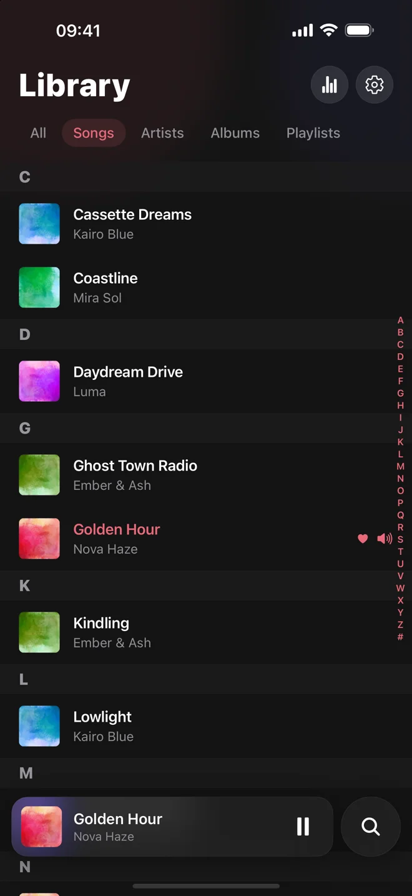
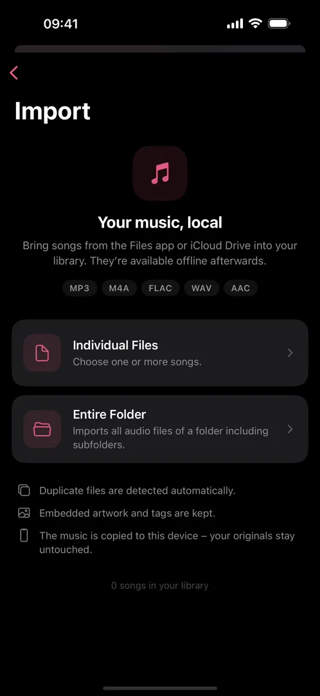
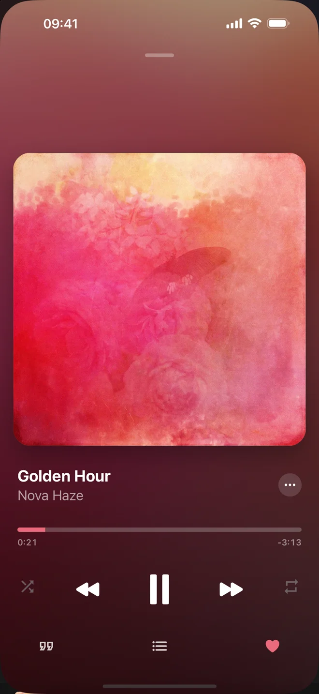
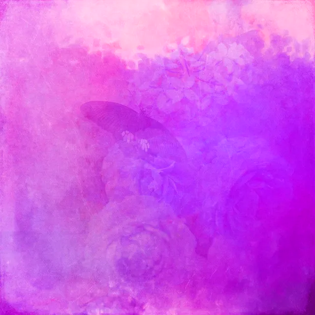

This is what your music looks like.
- 03 - nova haze - slow motion summer (official audio) [HQ].mp3artist: ya
- 07 - kairo blue - cassette dreams [unreleased] leaked.mp3www.free-mp3s.to
- juniper_vale_-_northbound_(lyrics).mp3unknown
- 01. luma - daydream drive (hd).m4aTrack
- Ember & Ash - Ghost Town Radio (Visualizer) 320kbps.mp3no tag

This is Lucid.
An offline music player for the files you own.
Rips, downloads, old drives.
An artist called ya
. Another called unknown
. Titles that end in (official audio) [HQ]
. Every player shows you exactly that.
Lucid reads both.
The tags and the file name, together. It keeps what is real and drops the rest, right on your iPhone, the moment you import.
Watch it clean up.

Real screen recording. Lucid 1.0 on iPhone.
What players usually ask for
- Create an account
- Choose a subscription
- Stream it from our servers
- Let us track what you play

None of that.
No account, no subscription, no tracking, no servers. Your files are copied to your iPhone and play without internet.
Try your worst file name.

Midnight Drive
Dj Sunny
This runs the same clean-up code as the app, in your browser. Nothing you type is sent anywhere.